Toko Besi UD. Sepakat Karawang Produsen Cakar Ayam Konstruksi
Toko besi tangan pertama pembuat pondasi cakar ayam, beli sloof jadi, tiang kolom, dan cincin begel siap cor. Lebih hemat langsung pengrajin tanpa perantara toko material, 100% Besi Baru Full SNI.
Mengapa Membeli di Toko Besi Karawang UD Sepakat Jauh Lebih Murah?
Toko material umum biasanya memesan besi rakitan dari pengrajin lalu menjualnya kembali dengan margin tambahan. Di UD Sepakat, Anda beli langsung dari pembuatnya: harga tangan pertama yang lebih hemat, ukuran presisi per cm sesuai denah tukang, dan jaminan 100% Besi Baru Full SNI.
Kalkulator Kebutuhan & Blueprint Gambar Kerja
Hitung perkiraan kebutuhan cincin begel atau cakar ayam berdasarkan denah bangunan Anda secara instan.
Parameter Sloof / Kolom
Sesuaikan panjang bentangan dan ukuran penampang
*Estimasi standar. Kebutuhan aktual dapat disesuaikan dengan denah kerja tukang Anda via WhatsApp.
Parameter Cakar Ayam (Footplate)
Tentukan dimensi tapak pondasi dan jumlah titik kolom
*Ukuran tapak disesuaikan dengan beban bangunan Anda. Konsultasikan denah pondasi ke Pak Hendra via WhatsApp.
Standar Bahan Bangunan: Besi Full SNI vs Besi Banci
Semua produk dirakit dari 100% Besi Baru Full SNI. Tanpa besi banci (diameter kurus di bawah standar) agar struktur bangunan Anda kokoh dan bebas risiko amblas:
Fungsi: Cincin begel tiang dinding. Tekukan siku rapi, tidak membal, dan mengikat pasangan bata kokoh.
Fungsi: Balok sloof & balok gantung. Menahan gaya geser cor agar balok tidak retak rambut.
Fungsi: Cakar ayam & sloof 1 lantai. Pondasi tapak kokoh menopang beban dinding tanpa risiko amblas.
Fungsi: Cakar ayam 2 lantai & kolom utama. Menahan beban bertingkat agar aman dari penurunan struktur.
| Ukuran Besi | Diameter Full SNI (UD Sepakat) | Diameter Banci (Pasaran Umum) | Penggunaan pada Produk Bengkel & Dampaknya |
|---|---|---|---|
| Besi 6 mm | 5.8 mm – 6.0 mm (Full SNI) | 4.8 mm – 5.2 mm (Banci) | Cincin Begel Kolom Praktis & Dinding: Menggunakan Full SNI membuat tekukan cincin presisi dan tidak meleyot saat dirakit serta mengikat tulangan dinding dengan kuat. |
| Besi 8 mm | 7.7 mm – 8.0 mm (Full SNI) | 6.5 mm – 7.0 mm (Banci) | Balok Sloof & Balok Gantung: Menahan gaya geser cor beton secara optimal. Besi banci rentan memicu retak rambut pada balok gantung. |
| Besi 10 mm | 9.7 mm – 10.0 mm (Full SNI) | 8.2 mm – 8.8 mm (Banci) | Pondasi Cakar Ayam & Tulangan Utama Sloof: Menjamin daya dukung beban pondasi tapak rumah 1 lantai tetap kokoh dan stabil menopang beban dinding. |
| Besi 12 mm | 11.6 mm – 12.0 mm (Full SNI) | 10.0 mm – 10.5 mm (Banci) | Cakar Ayam 2 Lantai, Sloof Berat & Kolom Struktur: Wajib Full SNI agar struktur gedung bertingkat tahan beban tekan dan aman dari resiko penurunan pondasi. |
Jejak Karya & Dokumentasi UD Sepakat Karawang
Foto fisik asli operasional workshop, perakitan tulangan, dan armada pengiriman langsung ke proyek pelanggan.
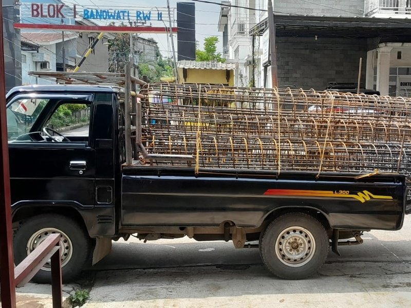
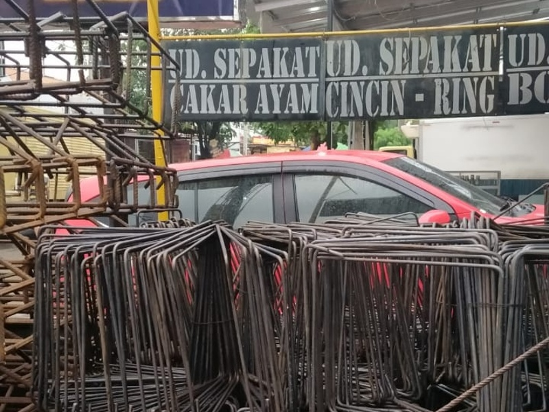
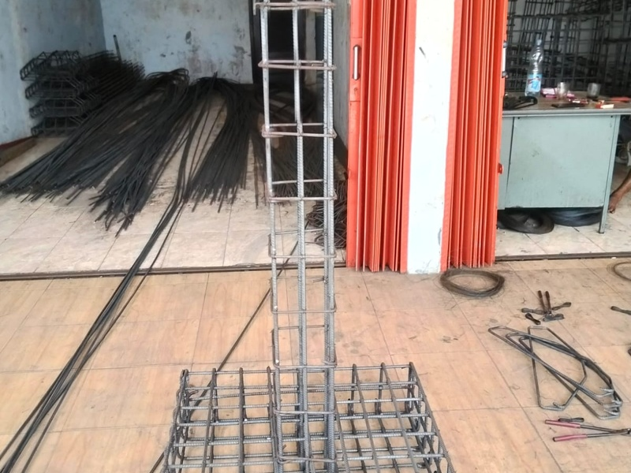
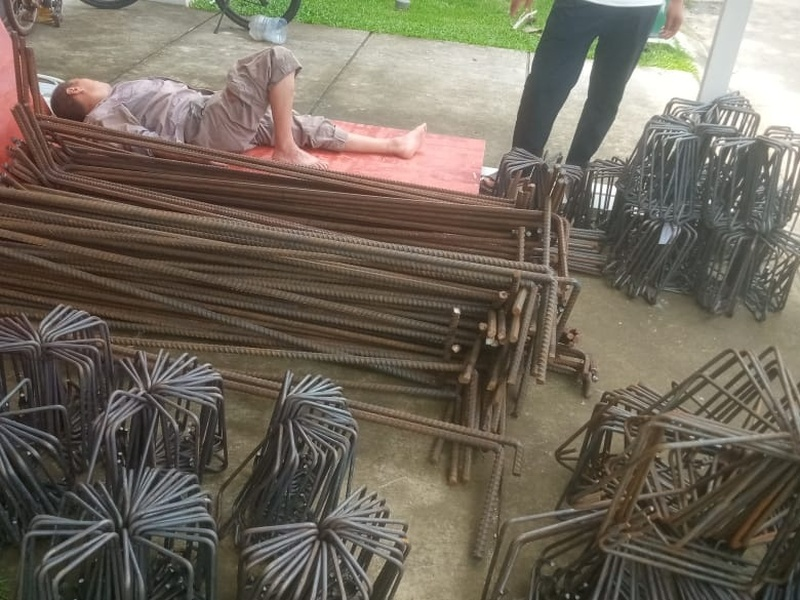
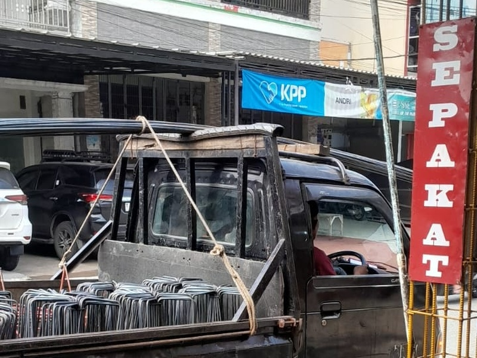
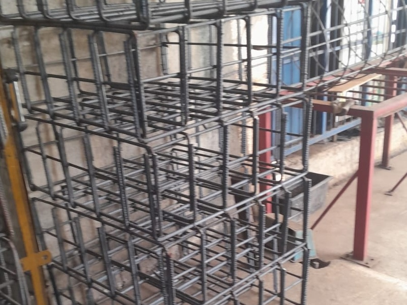
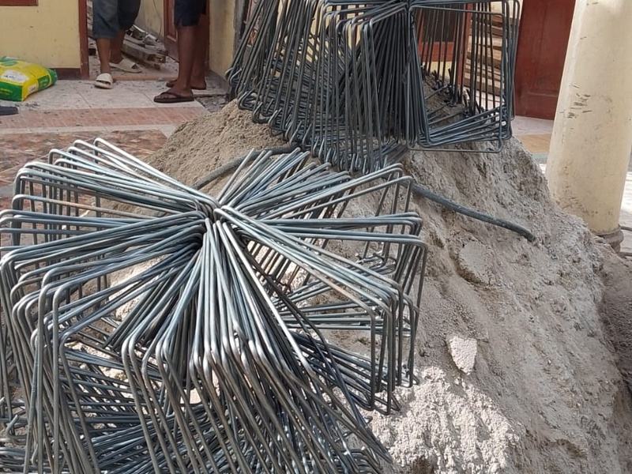
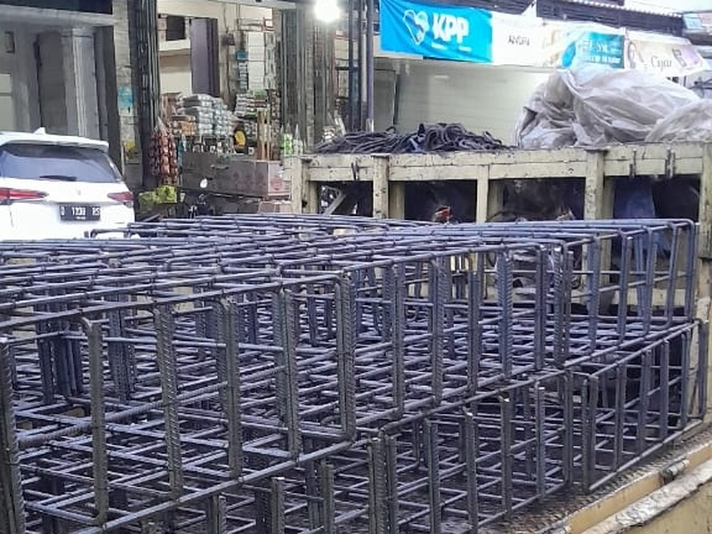
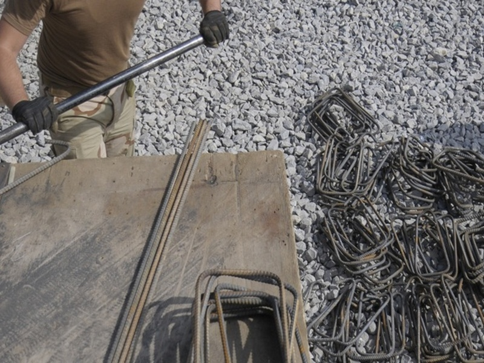
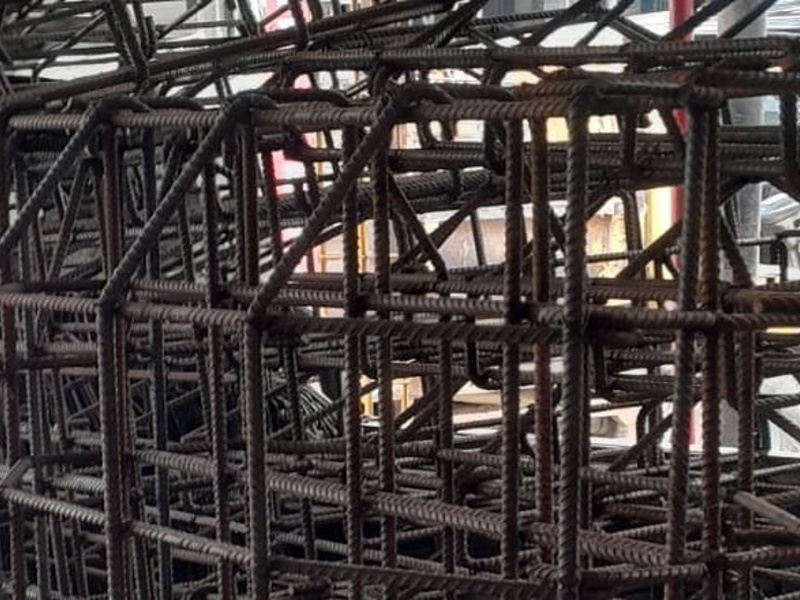
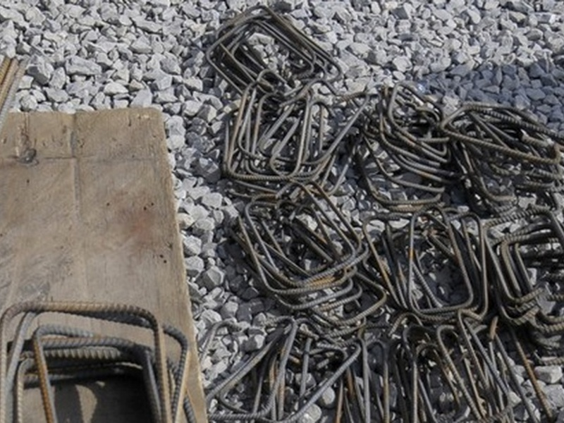
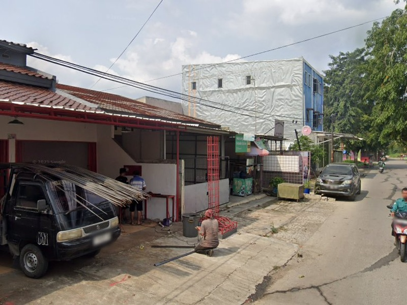
Satuan Maupun Borongan Proyek
Bisa beli eceran untuk renovasi rumah tinggal, maupun partai besar puluhan tiang kolom dan ribuan begel untuk perumahan.
Pengiriman Langsung ke Titik Cor
Armada pick-up siap kirim ke lokasi: Karawang, Cikarang, Purwakarta, Subang, dan Jabodetabek.
Bahan 100% Baru Full SNI
Bahan baku 100% Besi Baru Full SNI. Anda dipersilakan mengukur langsung diameter besi menggunakan jangka sorong di workshop kami.
Katalog Toko Besi: Jual Cakar Ayam, Beli Sloof & Begel
Produk rakitan tangan pertama dari 100% Besi Baru Full SNI. Dirakit sesuai pesanan (Made-to-Order) dengan harga langsung pengrajin.
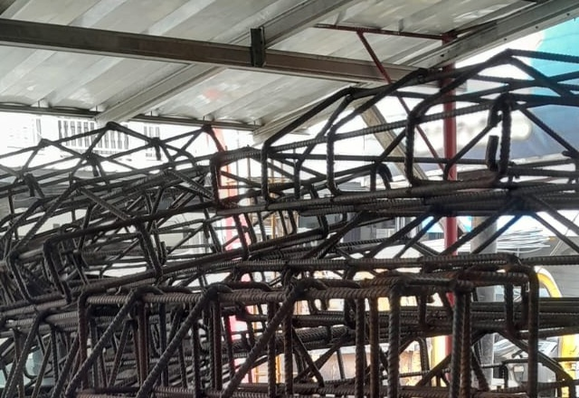
Pondasi Cakar Ayam (Footplate)
Anyaman tapak pondasi rumah tinggal 1 & 2 lantai. Anyaman rapat terikat kawat bendrat rangkap, kokoh dan siap tanam.
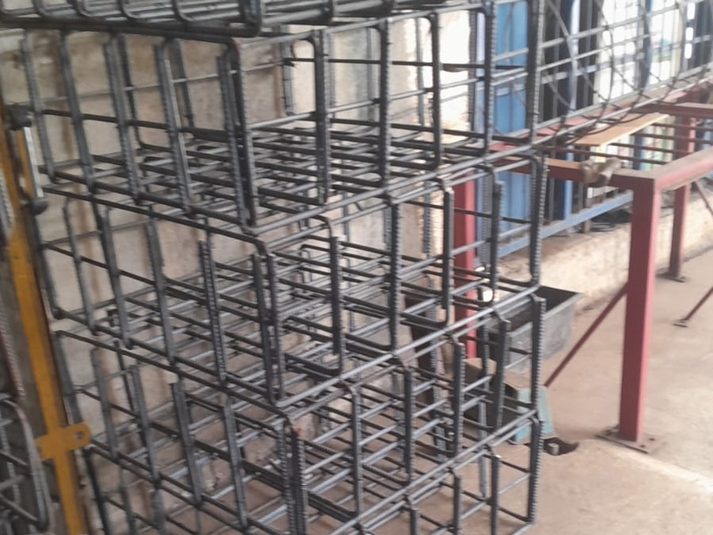
Balok Sloof Jadi (3m & 4m)
Balok mendatar di atas pondasi siap cor tanpa repot merakit. Sudah lengkap 4 batang tulangan memanjang + cincin begel terikat kawat rangkap.
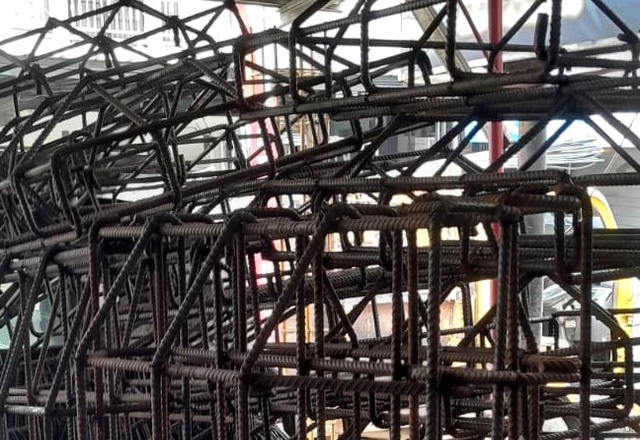
Tiang Kolom Jadi (3m & 4m)
Tiang praktis pengikat dinding bata merah dan hebel. Sudah lengkap 4 tulangan utama + cincin begel, tinggal dirikan tegak di lapangan.
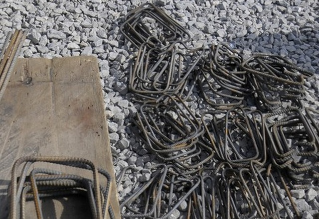
Cincin Begel (Lepasan)
Cincin kotakan satuan ditekuk siku presisi dengan kait pengunci rapi. Siap rakit untuk tiang, sloof pondasi, dan balok gantung.
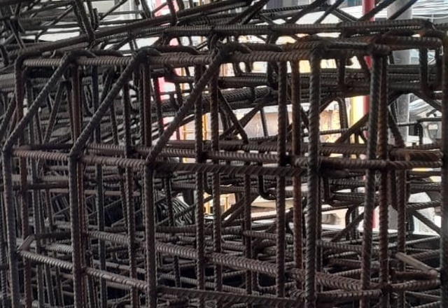
Pondasi Sudut Batas Tanah (Cakar Gantung)
Pondasi tapak asimetris khusus batas tanah tetangga (tiang kolom di tepi tapak), sudut siku bangunan, dan bordes tangga cor.
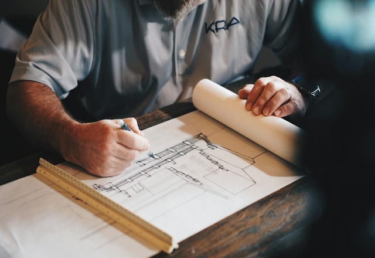
Pesanan Kustom Sesuai Gambar Kerja
Punya ukuran dari tukang atau gambar denah arsitek? Kirim fotonya ke WhatsApp untuk dirakit sesuai denah bangunan Anda.
Tanya Jawab Seputar Pemesanan Besi Konstruksi
Jawaban lengkap seputar sistem pemesanan tangan pertama, kepastian ukuran, jaminan bahan Full SNI, dan jangkauan pengiriman UD Sepakat Karawang.
Kunjungi Workshop UD. SEPAKAT
Kunjungi workshop kami di Telukjambe Timur, Karawang untuk cek stok besi, ukur diameter, atau konsultasi denah bangunan.